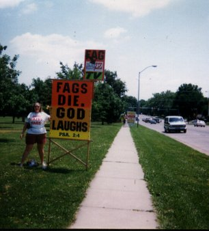
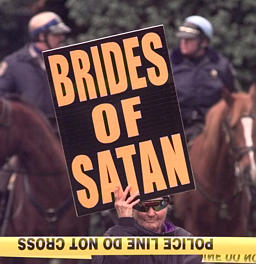

A child's rhyme stuck in my head.
It said that life is but a dream.
I've spent so many years in question
to find I've known this all along.
"So good to see you.
I've missed you so much.
So glad it's over.
I've missed you so much
Came out to watch you play.
Why are you running?"
Shroud-ing all the ground around me
Is this holy crow above me.
Black as holes within a memory
And blue as our new second sun.
I stick my hand into his shadow
To pull the pieces from the sand.
Which I attempt to reassemble
To see just who I might have been.
I do not recognize the vessel,
But the eyes seem so familiar.
Like phosphorescent desert buttons
Singing one familiar song...

So good to see you.
I've missed you so much.
So glad it's over.
I've missed you so much.
Came out to watch you play.
Why are you running away?"
Prying open my third eye.
So good to see you once again.
I thought that you were hiding.
And you thought that I had run away.
Chasing the tail of dogma.
I opened my eye and there we were.
So good to see you once again
I thought that you were hiding from me.
And you thought that I had run away.
Chasing a trail of smoke and reason.
amen.